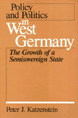

Examines in detail how West German policy and politics interrelate
Examines in detail how West German policy and politics interrelate


 Examines in detail how West German policy and politics interrelate
Examines in detail how West German policy and politics interrelate

|  |
Policy and Politics in West GermanyThe Growth of a Semisovereign StatePeter J. Katzensteinpaper EAN: 978-0-87722-264-4 (ISBN: 0-87722-264-9) |
"Admirably clear and well written from a new viewpoint, this is the best informed and most thoughtful analysis of the political system of West Germany. Anyone seriously interested in the German Federal Republic should read it."
—Karl Deutsch, Stanfield Professor of International Peace, Harvard Emeritus
How can we account for the lack of large-scale policy change in West Germany despite changes in the partisan make-up of the federal government? This formulation of "the German Question" differs from the one commonly posed by students of German politics, a version usually focused on Germany�s tragic confrontation with modernity and a possible revival of militarism and authoritarianism. Katzenstein here uncovers the political structures that make incremental policy change such a plausible political check against the growing force of government.
This book examines in detail how West German policy and politics interrelate in six problem areas: economic management, industrial relations, social welfare, migrant workers, administrative reform, and university reform. Throughout these six case studies, Katzenstein suggests that West Germany�s semi-sovereign state provides the answer to the German Question as it precludes the possibility of central authority. Coalition governments, federalism, para-public institutions, and the state bureaucracy are the domestic forces that have tamed power in the Federal Republic.
Peter J. Katzenstein is Professor of Government at Cornell University, as well as a former editor of International Organization.
Political Science and Public Policy
Policy and Politics in Industrial States, edited by Douglas E. Ashford, Peter J. Katzenstein, and T.J. Pempel.
Each volume in Policy and Politics in Industrial States, edited by Douglas E. Ashford, Peter J. Katzenstein, and T.J. Pempel, is a sophisticated textbook that focuses on a single country but in a comparative policy context. Each consists of a balance of analysis and primary documents for six major issues. The issues include topics like economic policy, labor relations, social welfare, and the internal organization of the state.
© 2015 Temple University. All Rights Reserved. This page: http://www.temple.edu/tempress/titles/260_reg.html.